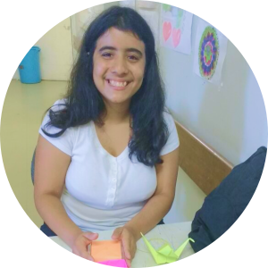

Eu sou Beatriz Karoline Cordeiro da Silva, sou apaixonada por animes, batata, séries, doramas, e tecnologia.
Desde muito pequena adorava mexer na internet, na epoca era discada, podendo ser acessada da meia noite da sexta para o sabado até a meia noite do domingo. Era muito legal
Esqueci de falar, mas sou Bacharel em Enfermagem pela UFPE, Técnica de Edificações pelo SENAI, e tentando ser Técnica de Mecânica pelo IFPE, atualmente parei o técnico no IFPE para aprender a programar e conseguir adentrar na area de tecnologia, que é uma area que eu amo, e que posso usar meus conhecimentos academicos para inovar muitas coisas.
Me conheça mais em https://bagy.bio/ebeatrizkcs